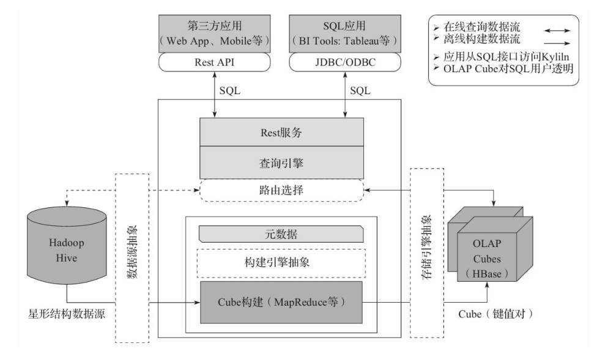
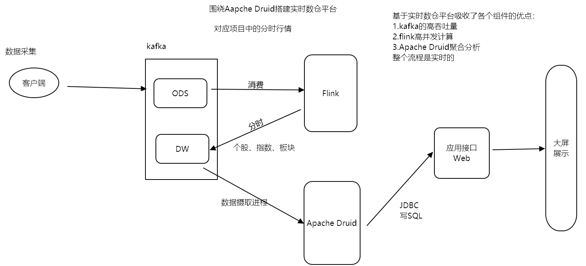

1. Apache Druid¶
Apache Druid 是一块高性能的实时数仓平台，具有高可用HA、高扩展、分布式部署的特点，在数据加工方面能够一定程度地对维度数据进行预聚合，数据响应能够达到亚秒级。 由MetaMarket公司于2011年开发，Druid被定义为开源、分布式、面向列存储的实时分析数据存储系统。
要解决的”痛点”是：
1.在高并发环境下，保证海量数据查询分析性能
2.同时提供海量实时数据的查询、分析与可视化功能
Druid是面向海量数据的、用于实时查询与分析的OLAP存储系统。Druid的关键特性如下：
1.亚秒级的OLAP查询分析
采用了列式存储、倒排索引、位图索引等关键技术
2.在亚秒级别内完成海量数据的过滤、聚合以及多维分析等操作
3.实时流数据分析 传统分析型数据库采用的批量导入数据，进行分析的方式 Druid提供了实时流数据分析，以及高效实时写入
4.实时数据在亚秒级内的可视化
5.丰富的数据分析功能 Druid提供了友好的可视化界面
6.SQL查询语言 REST查询接口
7.高可用性与高可拓展性 Druid工作节点功能单一，不相互依赖 Druid集群在管理、容错、灾备、扩容都很容易
不支持，如果不能接受可以直接弃用Druid
不支持精确去重
不支持 Join（只能进行 semi-join）
不支持根据主键的单条记录更新
注意：阿里巴巴也曾创建过一个开源项目叫 Druid （简称阿里 Druid），它是一个数据库连接池项目。阿里 Druid 和 我们要讨论的 Druid 没有任何关系，它们解决完全不同的问题
1.1. 架构¶
Druid节点
节点种类
Overload
MiddleManager
Coordinator
Historical
Broker
节点功能
Overload和MiddleManager
主要负责处理索引任务
Overlord是MiddleManager的master节点
Coordinator和Historical
负责管理分发Segment
Coordinator是Historical的master节点
Broker
负责接收Client查询请求
拆分子查询给MiddleManager和Historical节点
合并查询结果返回给Client

索引服务
负责数据的摄取
摄取方式包含：本地、HDFS、Kafka
负责数据销毁，还有segment(物理概念)的管理
主节点:Overload
从节点：middleManager
存储服务
负责数据的具体存储
数据按照时间进行存储，一个时间段称之为chunk(逻辑概念)，一个chunk包含多个segment(物理概念)
一个segment包含三列数据:时间列、维度列、指标列
主节点：coordinator
从节点：historical
查询服务
供数据查询使用
典型应用架构 
1.2. 预聚合-位图索引¶
当数据摄取的时候，Druid会根据维度列对指标的数据进行提前聚合，再插入到Druid的数据库里。位图索引会提高索引性能 数据结构 Map<Key,BitMap()>
1.3. 基本使用¶
启动Imply
cd /export/servers/imply-3.0.4/
bin/supervise -c conf/supervise/quickstart.conf > quickstart.log &
(后台启动)
bin/supervise -c /export/servers/imply-3.0.4/conf/supervise/quickstart.conf --daemonize
停止Imply
/export/servers/imply-3.0.4/bin/service --down
查看服务WebUI
组件名 URL
broker http://node01:8888
coordinator、overlord http://node01:8081/index.html
middleManager、historical http://node01:8090/console.html
1.4. 清理Druid¶
清理CDH版Druid的bin目录下的
/var/druid/segments和/var/druid/segement-cache以及/var/druid/task下的数据清理mysql中的数据